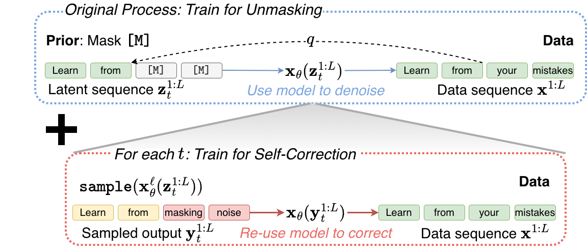
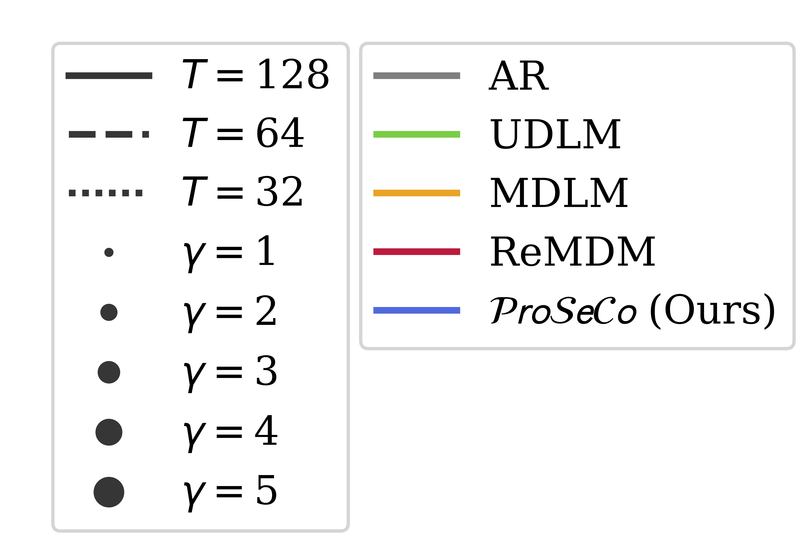
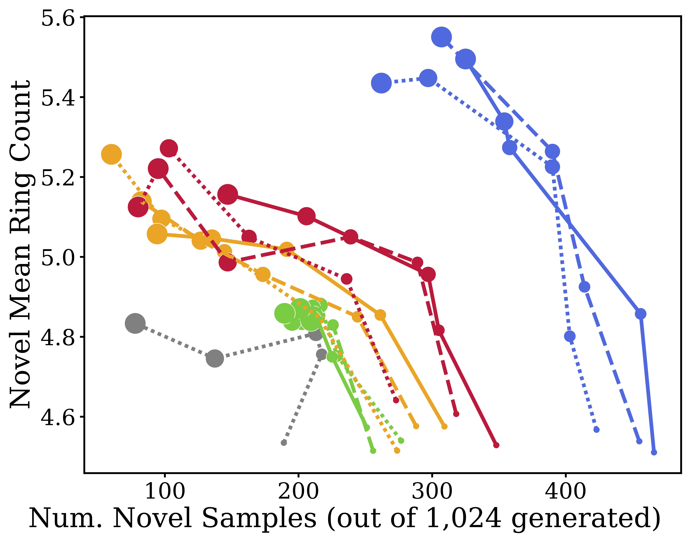
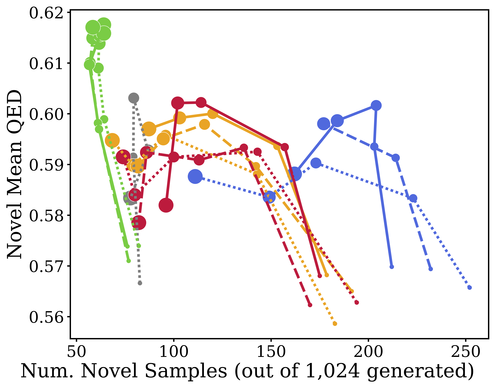

Learn from Your Mistakes:
Self-Correcting Masked Diffusion Models
1
Cornell



Notation Let \( \mathbf{x}, \mathbf{z} \) denote one-hot vectors for some vocabulary. We use the special one-hot vector \( \mathbf{m} \) to represent the mask token \( \texttt{[M]} \). We denote sequences of tokens using superscripts, e.g., \( \mathbf{x}^{1:L} \) is a sequence of \( L \) tokens, where \( \mathbf{x}^\ell \) denotes the \( \ell \)-th token in the sequence.
Masked diffusion models (MDMs) offer a compelling alternative to standard autoregressive (AR) models by enabling parallel token generation. In this framework, generation is framed as a denoising process. Formally, a forward corruption process \( q(\mathbf{z}_t \mid \mathbf{x}) \) gradually replaces clean data tokens \( \mathbf{x} \) with a special mask token \( \mathbf{m} \) as time \( t \) progresses from \( t=0 \) to \( t=1 \). A denoising network \( \mathbf{x}_\theta \) is then trained to reverse this process, learning to predict the clean data from a partially masked sequence \( \mathbf{z}_t \).
This is achieved by optimizing a variational bound on the negative log-likelihood, which simplifies to a weighted cross-entropy loss on masked token positions (Sahoo et al., 2024):
\( \mathcal{L}^{\text{MDM}}(\theta) = \mathbb{E} \int_0^1 \sum_{\ell=1}^L \delta_{\mathbf{z}_t^\ell, \mathbf{m}} \frac{\dot{\alpha}_t}{1-\alpha_t} \log \langle \mathbf{x}_\theta^\ell(\mathbf{z}_t^{1:L}), \mathbf{x}^\ell \rangle dt \)
where \( \delta \) is the Kroenecker delta function, and the \( \frac{\dot{\alpha}_t}{1-\alpha_t} \) factor discounts samples that are more heavily noised.
Since the noising process is "absorbing", in the reverse, process unmasked tokens do not change. This create a fundamental limitation for MDMs: once a token is unmasked during generation, it is locked in and cannot be modified by the model in future steps. Because the loss objective only targets masked positions, the network \( \mathbf{x}_\theta \) is never trained to modify inputs that are already unmasked.
Consequently, errors made during parallel decoding inevitably accumulate. If the model incorrectly predicts a token early in the generation trajectory, it lacks any mechanism to revisit or revise that decision. As generation continues, these locked-in errors compound, leading to distributional drift that ultimately degrades the overall sample quality.


To address this limitation, we aim to equip MDMs with the inherent ability to alter previously decoded tokens. We propose a framework where a single model can act in two distinct modes: when inputs contain masked tokens, the model's role is to unmask; when inputs contain all non-mask tokens, the model operates in a "corrector" mode and can update already generated positions.
Our key insight is to treat model-generated outputs as corrupted sequences from the true data distribution, where certain tokens have been replaced by incorrect ones sampled from the model itself. This perspective motivates using model-generated sequences as inputs for a corrector model.
We start by introducing an error correction term to the MDM objective, which trains a separate corrector network to recover from mistakes.
argmax sampling for \( \pi \).
\( \mathcal{L}^{\text{CMDM}}(\phi, \theta) = \mathbb{E} \int_0^1 \sum_{\ell=1}^L \left[ \lambda \underbrace{\log \langle \mathbf{x}_\phi^\ell(\mathbf{y}_t^{1:L}), \mathbf{x}^\ell \rangle}_{\mathcal{L}^C} + \mathcal{L}^{\text{MDM}} \right] dt \)
Combining these design decisions yields our final objective for Progressive Self-Correction (ProSeCo), which effectively trains the unified model to jointly unmask and correct its own decoding errors:
\( \mathcal{L}^{\text{SCMDM}}(\theta) = \mathbb{E} \int_0^1 \frac{\dot{\alpha}_t}{1-\alpha_t} \sum_{\ell=1}^L \left[ \underbrace{\log \langle \mathbf{x}_\theta^\ell(\mathbf{y}_t^{1:L}), \mathbf{x}^\ell \rangle}_{\mathcal{L}^{\text{SC}}} + \underbrace{\delta_{\mathbf{z}_t^\ell, \mathbf{m}} \log \langle \mathbf{x}_\theta^\ell(\mathbf{z}_t^{1:L}), \mathbf{x}^\ell \rangle}_{\mathcal{L}^{\text{MDM}}} \right] dt \)
One of the biggest advantages of ProSeCo is how easily it can be integrated into existing training pipelines. Training a model to simultaneously unmask tokens and self-correct requires only a minor modification to the standard MDM training loop.
In practice, we perform the standard MDM forward pass to compute the unmasking loss.
Then, we take those same predictions, apply an argmax operation to sample discrete tokens, and
pass them back into the model to compute the self-correction loss.
To ensure training stability, we wrap the first set of outputs in a stop-gradient operation, denoted as
sg(·), before forming the corrector input.
The full procedure is detailed in Algorithm 1 below, with our additions to the standard MDM training highlighted in brown.
Because our unified model can operate in both "unmasking" and "corrector" modes, we can fundamentally change the generation process. We can periodically pause the unmasking process to let the model review and revise its past decisions.
During inference, we interleave standard unmasking steps with corrective refinement loops. To give users control over the compute budget, we introduce two hyperparameters: the corrector frequency (\( \omega \)), which determines how often a correction loop is triggered, and the correction budget (\( S \)), which dictates the number of iterative refinement steps within each loop.
When a correction loop is triggered, the model takes its current predictions, converts them into a fully
unmasked sequence via argmax decoding, and iteratively passes this sequence back through the
network.
This inner loop serves a dual purpose:
sample_posterior routine for unmasking the next batch of tokens.The complete sampling procedure is outlined in Algorithm 2, with the inner corrector loop detailed in Algorithm 3. When ProSeCo acts strictly as an unmasking model (i.e., skipping the brown highlighted steps), it is identical to standard MDM generation. But with the corrector engaged, the model dynamically self-corrects as it generates.
corrector loop
logitscorrector_logits
We evaluate ProSeCo across multiple tasks, ranging from complex reasoning in code and math to molecular design and unconditional text generation. Across the board, we find that the ability to self-correct allows our models to generate better samples faster.
Task & Dataset: We begin by applying supervised fine-tuning (SFT) to the 8B-parameter LLaDA-Base model, aiming to improve its reasoning capabilities. We train for ~40 billion tokens on a blend of the rStar-Coder (code) and OpenMathInstruct-2 (math) datasets.
Baselines: We compare our ProSeCo SFT against the vanilla SFT of LLaDA-Base, off-the-shelf LLaDA variants (Base, Instruct, 1.5), an autoregressive equivalent (Llama 3.1 8B Instruct), and alternative MDM corrector mechanisms like ReMDM and PRISM.
Takeaway: ProSeCo significantly outperforms all diffusion baselines and beats the comparable Llama 3.1 AR model on three out of four benchmarks. Furthermore, as shown in the figures below, ProSeCo delivers vastly superior quality-efficiency trade-offs. It can generate samples 2–3x faster than baseline MDMs without losing accuracy (Fast regime), or leverage increased inference-time compute to scale performance well beyond standard limitations (Max regime).
| Model | Corrector Sampling |
Code | Math | ||
|---|---|---|---|---|---|
| HumanEval (0-shot) |
MBPP (3-shot) |
GSM8K (5-shot) |
Minerva (4-shot) |
||
| Off-the-Shelf 8B Models | |||||
| Llama3.1-Instruct | ✗ | 58.54 | 57.80 | 76.88 | 31.10 |
| LLaDA 1.5 | ✗ | 43.90 | 27.20 | 81.12 | 35.10 |
| LLaDA-Instruct | ✗ | 40.24 | 29.40 | 78.85 | 33.32 |
| + ReMDM | ✓ | 40.24 | 35.20 | 79.08 | 32.72 |
| + PRISM | ✓ | 42.70 | 32.30 | -- | -- |
| LLaDA-Base | ✗ | 33.54 | 40.40 | 66.72 | 27.88 |
| Our SFT with LLaDA-Base 8B Model | |||||
| Vanilla SFT | ✗ | 48.17 | 43.20 | 77.48 | 29.74 |
| + ReMDM | ✓ | 43.90 | 42.40 | 80.97 | 29.90 |
| ProSeCo SFT (Ours) | ✗ | 52.44 | 44.00 | 79.45 | 32.42 |
| + ProSeCo Sampling | ✓ | 62.20 | 50.20 | 82.18 | 35.10 |
Table 1: Pass@1 accuracy on Code and Math benchmarks. Best values per column in bold, second best underlined.


Task & Dataset: We test guided generation using the QM9 dataset, consisting of SMILES string representations of molecules. The goal is to maximize specific chemical properties, namely, ring count and drug-likeness (QED), without causing the generated samples to collapse into invalid or highly repetitive sequences.
Baselines: Autoregressive (AR), standard masked diffusion (MDLM), uniform categorical noise diffusion (UDLM), and ReMDM.
Takeaway: A classic problem with classifier-free guidance (CFG) is that pushing guidance strengths too high degrades sample diversity and quality. ProSeCo naturally recovers from these guidance-induced errors, noticeably pushing the Pareto frontier up and to the right. It generates higher quantities of novel, valid molecules while simultaneously hitting higher property scores.



Task & Dataset: Finally, we evaluate open-ended, unconditional text generation by training models from scratch on the OpenWebText dataset to generate 1,024-token sequences.
Baselines: AR, standard MDLM, ReMDM, and PRISM.
Takeaway: ProSeCo generates fluent text with high sample quality (measured by MAUVE and Generative Perplexity) without collapsing the diversity of the generated outputs (measured by Entropy). Crucially, it does this much more efficiently than alternatives: a ProSeCo model using just 256 inference steps achieves comparable quality to PRISM at 512 steps and ReMDM at 1024 steps.
| Model | MAUVE (↑) | Gen. PPL (↓) | Entropy (↑) | |||||||||
|---|---|---|---|---|---|---|---|---|---|---|---|---|
| 128 | 256 | 512 | 1024 | 128 | 256 | 512 | 1024 | 128 | 256 | 512 | 1024 | |
| Data | 1.00 | 14.8 | 5.44 | |||||||||
| AR (T=1024) | 0.760 | 12.1 | 5.22 | |||||||||
| MDLM | 0.015 | 0.023 | 0.031 | 0.042 | 61.5 | 55.8 | 53.0 | 51.3 | 5.52 | 5.49 | 5.48 | 5.46 |
| ReMDM | 0.057 | 0.216 | 0.350 | 0.403 | 42.5 | 30.5 | 21.1 | 28.6 | 5.43 | 5.34 | 5.21 | 5.38 |
| PRISM | 0.118 | 0.294 | 0.423 | 0.527 | 21.5 | 18.0 | 16.4 | 15.3 | 5.18 | 5.15 | 5.12 | 5.10 |
| ProSeCo (Ours) | 0.295 | 0.557 | 0.597 | 0.604 | 23.1 | 16.5 | 13.2 | 10.9 | 5.45 | 5.39 | 5.29 | 5.22 |
Table 2: Unconditional generation sample quality for models trained on OpenWebText across various inference budgets.
@article{
schiff2026learn,
title={Learn from Your Mistakes: Self-Correcting Masked Diffusion Models},
author={Schiff, Yair and Belhasin, Omer and Uziel, Roy and Wang, Guanghan and Arriola, Marianne and Turok, Gilad and Elad, Michael and Kuleshov, Volodymyr},
journal={arXiv preprint arXiv:2602.11590},
year={2026}
}